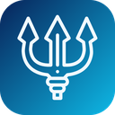

Classement entre amis, boosters rentables, cartes possédées dans les échanges, alertes du marché et vente auto des doublons, le tout dans une seule extension. Aucun serveur externe. Installation : 5 minutes.
Récupère aquaman-perso.zip (moins de 200 Ko).
Tu as Git ? git clone https://github.com/TeddySbot/poseidon.git : le dossier à charger est alors poseidon/aquaman-perso, et une mise à jour se fait avec git pull.
Clic droit sur le fichier → Extraire tout… Range le dossier dans un endroit où il restera, par exemple Documents : l’extension en a besoin pour fonctionner, ne le supprime pas.
Tape chrome://extensions dans la barre d’adresse (Edge : edge://extensions, Brave : brave://extensions), puis active le Mode développeur en haut à droite.
Clique sur Charger l’extension non empaquetée et choisis le dossier qui contient manifest.json.
Épingle l’icône (🧩 puis 📌) : le badge affiche tes boosters à ouvrir et tes alertes.
Va sur poseidon-scans.net/jeu et connecte-toi : la visite guidée démarre toute seule.
chrome://extensions : les deux en même temps feraient tout en double.Toutes les 6 h, l’extension regarde sur GitHub si une nouvelle version existe. Si oui, une notification et un bandeau te préviennent. Rien ne s’installe tout seul : télécharge le nouveau zip, remplace le contenu du dossier, puis clique sur ↻ sous Aquaman dans chrome://extensions (ou git pull, puis ↻). Tes réglages et tes listes sont gardés.
Aucune, à personne. L’extension lit le jeu avec ta session sur poseidon-scans.net, comme le site lui-même. Tes listes, statistiques et réglages restent sur ton PC. Le seul autre contact est GitHub, pour lire le numéro de la dernière version. Cette version est l’Aquaman de A‑Finch13 débarrassé de son serveur et de sa télémétrie.
Les règles de Poseidon Scans interdisent les robots. Les Alertes et la Vente auto font des requêtes automatiques avec ton compte : à utiliser à tes risques, avec une fréquence raisonnable (5 s ou plus pour les alertes, vitesse « Normal » pour la vente auto).
Le site refuse les ventes envoyées directement par une extension. La Vente auto les envoie donc depuis un onglet épinglé de poseidon-scans.net : laisse-le ouvert pendant qu’elle tourne.
Pas pour l’instant : cette version n’existe qu’en extension pour ordinateur. Chrome sur téléphone n’accepte de toute façon pas les extensions.
Dans chrome://extensions, clique sur Supprimer sous Aquaman (perso). Rien d’autre n’a été installé sur le PC.